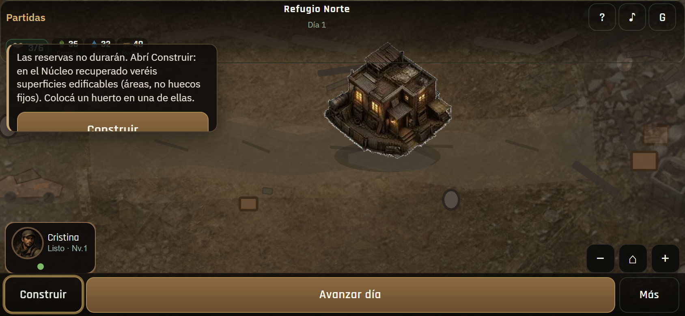
01 · Coach + HUDComida/Agua/Madera · tip superficies
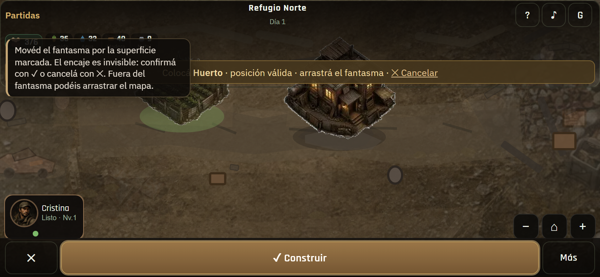
02 · Superficies + ghostÁreas edificables · ✓/✕
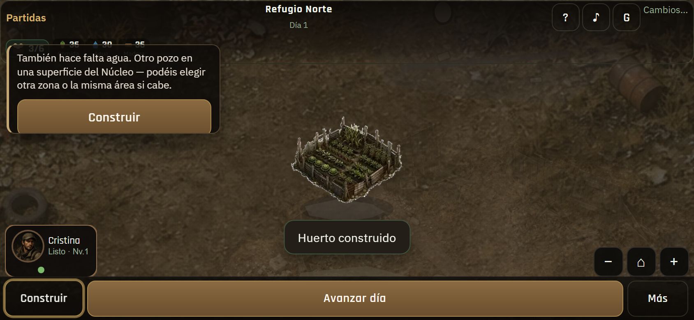
03 · Huerto staffedAvance tutorial natural
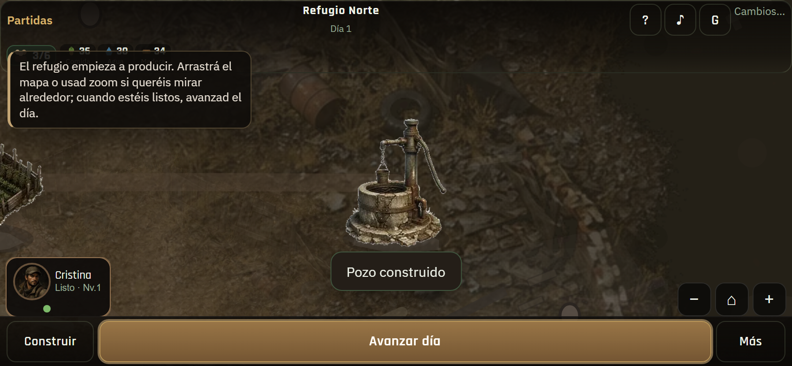
04 · Listo avanzarPozo + tip final
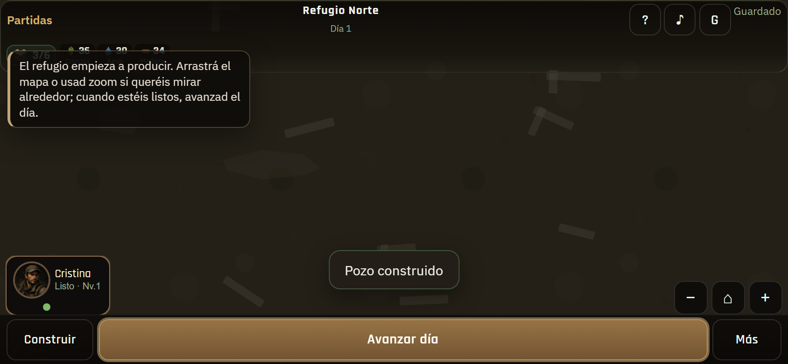
05 · Pan mundoMundo > viewport
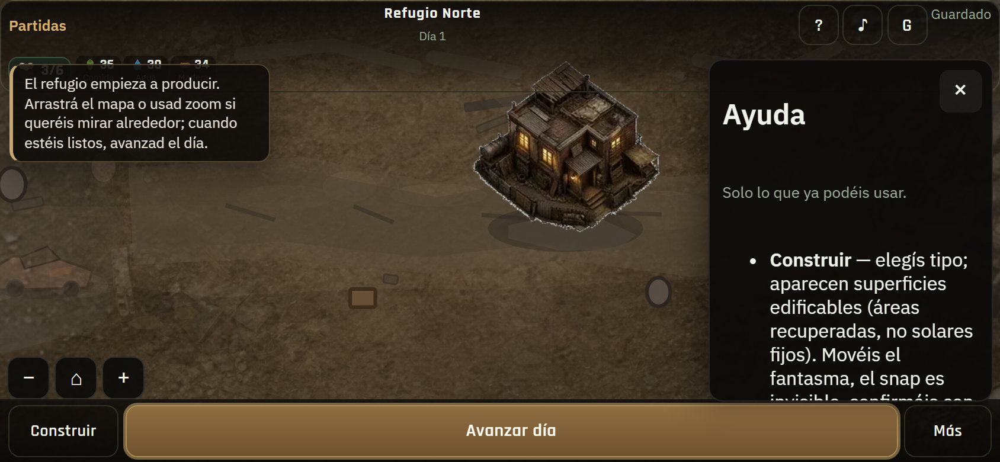
06 · AyudaSuperficies · ghost · recuperar
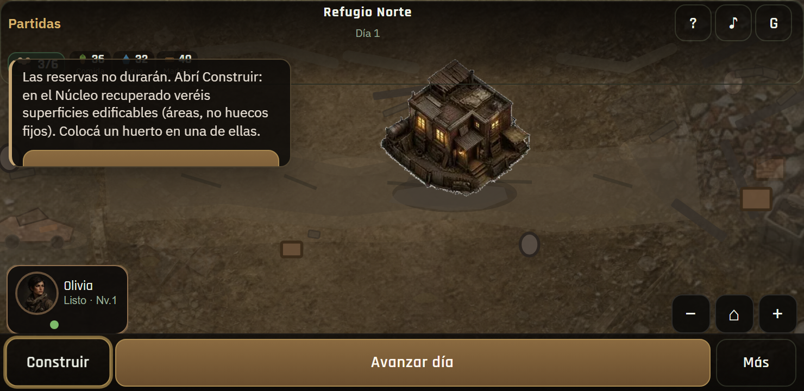
07 · 740×360Coach + HUD legibles
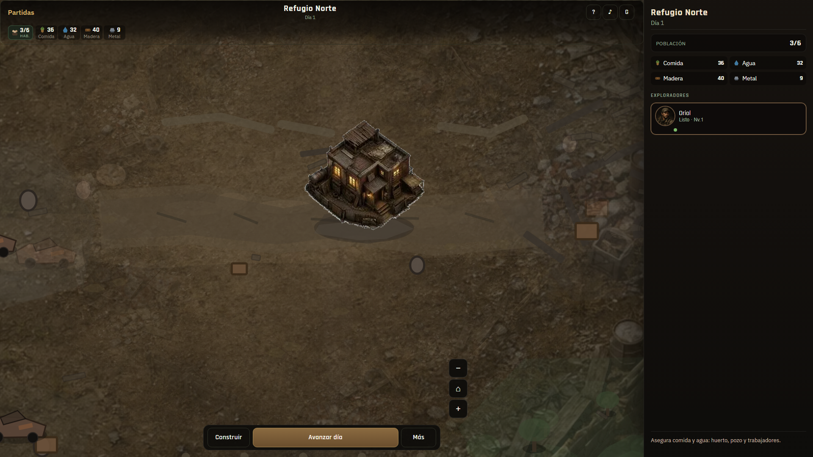
08 · Desktop panel+mundoColumna info · mundo jugable
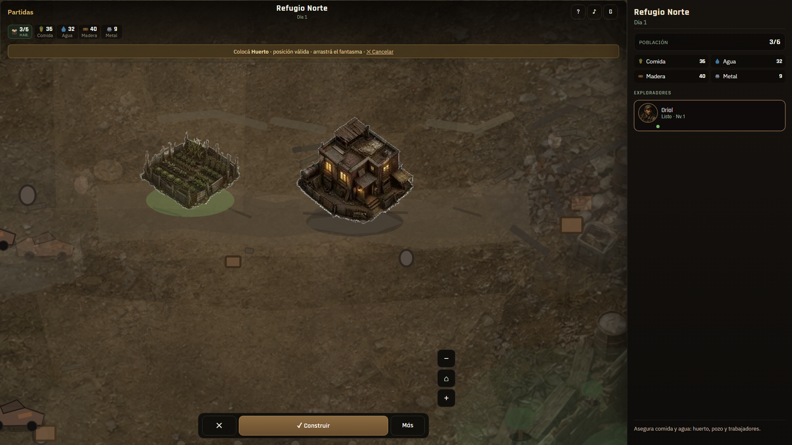
09 · Desktop construirSuperficies + panel
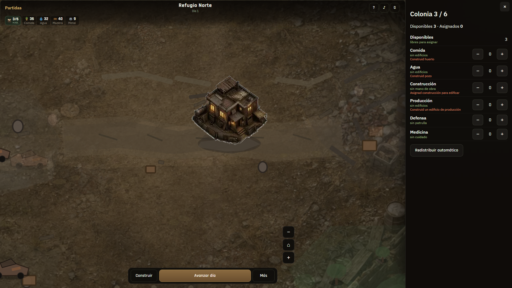
10 · Desktop fichaSheet en columna panel
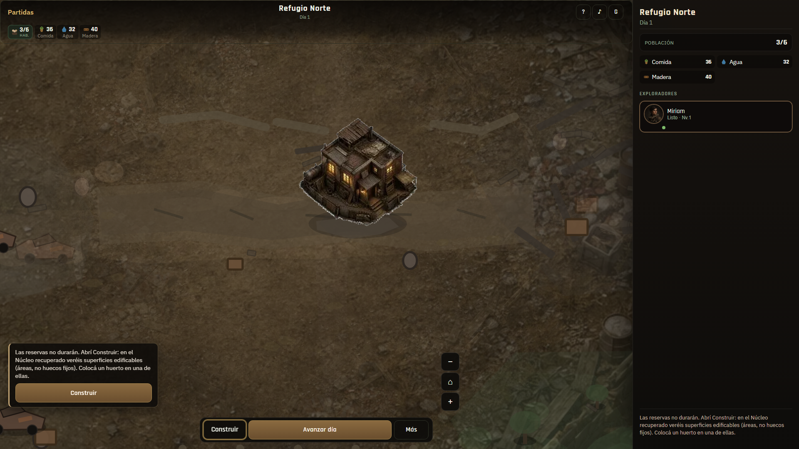
11 · Desktop + coachTutorial en composición panel
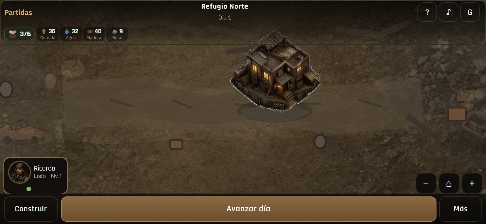
12 · Móvil limpioSin panel desktop · D1 HQ